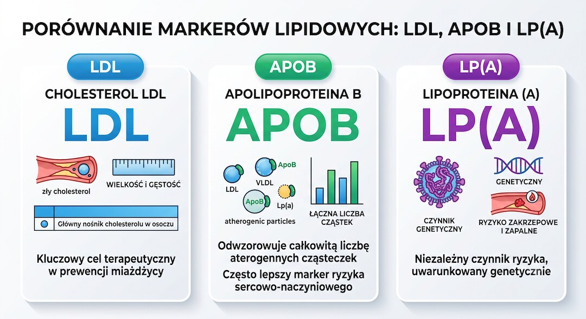
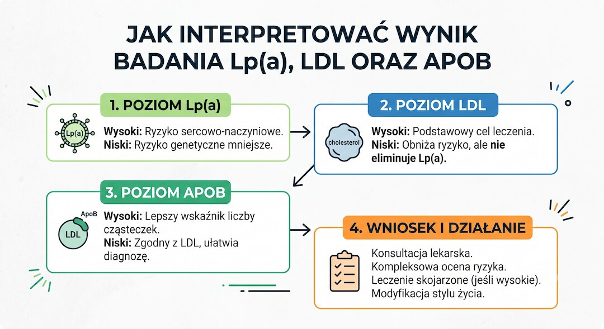

Lp(a), czyli lipoproteina(a), to badanie, o które prawie nikt nie pyta, a które warto zrobić raz w życiu. W przeciwieństwie do LDL jej poziom zależy głównie od genów, nie od diety czy ruchu. Po 50-tce, gdy w rodzinie zdarzały się zawały albo udary, ten jeden wynik potrafi zmienić sposób, w jaki lekarz patrzy na Twoje ryzyko sercowe.
Szybka odpowiedź
Lipoproteina a Lp(a) to głównie genetyczny marker ryzyka zawału, udaru i zwężenia zastawki aortalnej, który warto zbadać przynajmniej raz w życiu po 50-tce lub przy rodzinnych zawałach przed 60 rokiem życia, a wynik czytać razem z LDL, ApoB, ciśnieniem, cukrem, paleniem papierosów i historią rodzinną.
Kluczowe wnioski
- Lp(a) to osobny, w około 90% genetyczny czynnik ryzyka miażdżycy - nie da się go ocenić na podstawie samego LDL.
- Wynik powyżej ok. 50 mg/dl (125 nmol/l) traktuje się jako podwyższone ryzyko według konsensusu EAS z 2022 roku.
- W Polsce badanie kosztuje zwykle ok. 70-150 zł, zależnie od laboratorium, miasta i ewentualnej opłaty za pobranie.
- Wytyczne ACC/AHA z 2026 roku zalecają zbadanie Lp(a) przynajmniej raz w życiu u każdego dorosłego - to nowa, mocna rekomendacja.
Lp(a) w skrócie: co warto wiedzieć przed badaniem?
Lp(a), czyli lipoproteina(a), to w około 90% genetyczny czynnik ryzyka zawału, udaru i zwężenia zastawki aortalnej. Dieta ani ruch nie obniżają jej poziomu tak, jak wpływają na LDL. Wystarczy zbadać ją raz w życiu, najlepiej po 50-tce lub gdy w rodzinie był zawał albo udar przed 60. rokiem życia. Wysoki wynik nie jest wyrokiem - to raczej punkt wyjścia do rozmowy o LDL, ApoB , ciśnieniu i cukrze.
To jedno z niewielu badań krwi, które w praktyce wykonuje się jednorazowo, a jego wynik zostaje aktualny na długie lata - właśnie dlatego, że w dużej mierze zależy od genów odziedziczonych po rodzicach.
Czym jest Lp(a) i skąd się bierze?
Lipoproteina(a), w skrócie Lp(a), to cząsteczka LDL, do której doczepia się dodatkowe białko - apolipoproteina(a). To dodatkowe białko sprawia, że cząstka mocniej wiąże się ze ścianą naczyń krwionośnych i sprzyja tworzeniu zakrzepów. W około 90% jej stężenie zależy od genów, a nie od tego, co jesz czy ile się ruszasz.
Wielkość cząstki apo(a) jest odwrotnie proporcjonalna do stężenia Lp(a) we krwi - im mniejsza cząstka, tym wyższy zwykle wynik. Poziom Lp(a) u kobiet bywa średnio o około 10% wyższy niż u mężczyzn, a różnice między ludźmi mogą sięgać nawet tysiąckrotności.
Czym różni się Lp(a) od LDL-C i ApoB?
LDL-cholesterol (LDL-C) mierzy, ile cholesterolu niosą cząstki LDL we krwi. ApoB liczy wszystkie aterogenne cząstki - LDL, VLDL, IDL i Lp(a) - niezależnie od tego, ile cholesterolu w nich jest. Lp(a) to osobna, dodatkowo aterogenna cząstka, która nie mieści się w standardowym pomiarze LDL-C.
Badania porównujące te wskaźniki pokazują, że ApoB przewidywał ryzyko sercowo-naczyniowe dokładniej niż LDL-C. Na poziomie pojedynczej cząstki Lp(a) uznaje się za nawet około sześciokrotnie bardziej aterogenną niż LDL - dlatego niskie LDL-C, zwłaszcza u kobiet, czasem maskuje realne ryzyko wynikające z wysokiej Lp(a).
Ważne rozróżnienie SEO i zdrowotne: ten artykuł dotyczy Lp(a), czyli genetycznego markera ryzyka. Jeśli szukasz norm, ceny i interpretacji samego ApoB, przejdź do osobnego poradnika o ApoB - tutaj ApoB pojawia się tylko jako punkt porównania przy czytaniu wyniku Lp(a).

Dlaczego zwykły lipidogram może nie wystarczyć?
Standardowy lipidogram pokazuje cholesterol całkowity, HDL, LDL-C i trójglicerydy. Nie obejmuje domyślnie ani Lp(a), ani ApoB. Można więc mieć wynik LDL w normie i wciąż nosić w sobie podwyższone, genetyczne ryzyko sercowo-naczyniowe, o którym standardowy pakiet badań nic nie mówi.
To jeden z powodów, dla którego towarzystwa kardiologiczne i lipidologiczne, w tym Polskie Towarzystwo Kardiologiczne i Polskie Towarzystwo Lipidologiczne, zalecają rozszerzenie profilu lipidowego o Lp(a) przynajmniej raz w życiu - szczególnie przy niejasnym obrazie ryzyka.
Jakie są normy Lp(a) w mg/dl i nmol/l?
Konsensus Europejskiego Towarzystwa Miażdżycowego (EAS) z 2022 roku podaje pragmatyczne progi: poniżej 30 mg/dl (poniżej 75 nmol/l) to zakres niskiego ryzyka, 30-50 mg/dl (75-125 nmol/l) to strefa pośrednia, a powyżej 50 mg/dl (powyżej 125 nmol/l) to zakres podwyższonego ryzyka. U około 80% osób pochodzenia europejskiego wynik mieści się poniżej 40 mg/dl (90 nmol/l).
Ważne zastrzeżenie: jednostek mg/dl i nmol/l nie da się prosto przeliczyć 1:1. Orientacyjnie przyjmuje się przelicznik około 1 nmol/l = 0,4 mg/dl, ale ze względu na różną wielkość cząstek apo(a) i różne metody pomiaru, dokładna konwersja bywa niepewna. Dlatego czytaj wynik w jednostce, w jakiej podało go laboratorium, i nie przeliczaj go samodzielnie na potrzeby decyzji klinicznych.
- Poniżej 30 mg/dl (poniżej 75 nmol/l) - zakres niskiego ryzyka
- 30-50 mg/dl (75-125 nmol/l) - strefa pośrednia
- Powyżej 50 mg/dl (powyżej 125 nmol/l) - zakres podwyższonego ryzyka

Od jakiego poziomu Lp(a) rośnie ryzyko?
Za granicę podwyższonego ryzyka przyjmuje się zwykle około 50 mg/dl lub 125 nmol/l - taki próg wskazują zarówno konsensus EAS z 2022 roku, jak i wytyczne American Heart Association i American College of Cardiology. Wysoki wynik (co najmniej 125 nmol/l lub 50 mg/dl) wiąże się z około 1,4-krotnie wyższym długoterminowym ryzykiem zawału serca lub udaru mózgu.
Warto pamiętać, że zależność między poziomem Lp(a) a ryzykiem sercowo-naczyniowym jest ciągła, a nie skokowa - im wyższy wynik, tym wyższe ryzyko, bez ostrego progu odcięcia. Dlatego lekarz zawsze patrzy na wynik Lp(a) razem z całym obrazem ryzyka: wiekiem, ciśnieniem, LDL, cukrzycą i paleniem.
Ile kosztuje badanie Lp(a) w Polsce?
Cena samego badania Lp(a) w polskich laboratoriach zwykle mieści się w przedziale około 70-150 zł, w zależności od laboratorium, miasta i tego, czy dolicza się osobną opłatę za pobranie krwi. Przykładowo w cenniku online jednego z ogólnopolskich laboratoriów badanie figurowało od około 70,30 zł, a w innym - w podobnym przedziale, plus opłata za pobranie.
Ceny zmieniają się i różnią między miastami oraz promocjami, więc nie ma jednej sztywnej kwoty - przed wizytą warto sprawdzić aktualny cennik wybranego laboratorium. Badanie bywa też tańsze w przeliczeniu, jeśli zamawia się je razem z ApoB i ApoA1 w pakiecie rozszerzonego lipidogramu.
Czy Lp(a) bada się tylko raz w życiu?
Tak - to obecnie dominujące podejście. Ponieważ stężenie Lp(a) w około 90% zależy od genów i tradycyjnie uznawano je za stabilne przez całe życie, wytyczne ESC/EAS oraz zaktualizowane w 2026 roku wytyczne ACC/AHA zalecają zmierzenie Lp(a) przynajmniej raz u każdego dorosłego - to nowa, mocna rekomendacja pierwszej klasy.
Warto jednak być uczciwym: badanie STAR-Lp(a), opublikowane w 2026 roku, przyjrzało się 1263 osobom badanym dwukrotnie w odstępie 1-3 lat i wykazało, że u 64,7% z nich wynik zmienił się o co najmniej 10%, a u 14% - o co najmniej 50%. Autorzy tego badania kwestionują założenie, że jeden pomiar zawsze wystarcza na całe życie. To rodząca się dyskusja naukowa, a nie jeszcze oficjalna zmiana głównych wytycznych - jeśli masz wątpliwości co do swojego wyniku, zapytaj lekarza, czy w Twojej sytuacji warto go powtórzyć.
Kto szczególnie powinien zrobić badanie Lp(a)?
Badanie Lp(a) ma największy sens dla osób z podwyższonym lub niejasnym ryzykiem sercowo-naczyniowym. Nie trzeba mieć żadnych objawów, żeby warto było je zrobić - u części osób wysoka Lp(a) to jedyny sygnał podwyższonego ryzyka, jaki w ogóle udaje się wychwycić.
Najmocniejszym wskazaniem jest wywiad rodzinny: zawał, udar, miażdżyca lub nagła śmierć sercowa u bliskiego krewnego przed 60. rokiem życia. Lp(a) warto też rozważyć, gdy LDL wygląda dobrze, ale ryzyko sercowe w rodzinie nie pasuje do zwykłego lipidogramu.
- Zawał serca lub udar mózgu w rodzinie przed 60. rokiem życia
- Wysoki poziom LDL-C, mimo zdrowego stylu życia
- Rozpoznana choroba wieńcowa lub miażdżyca
- Wysoki poziom ApoB
- Niejasny lub niespójny profil lipidowy (np. dobry LDL przy innych sygnałach ryzyka)
- Osobisty epizod sercowo-naczyniowy w młodszym wieku bez oczywistej przyczyny
Co oznacza połączenie wyników LDL, ApoB i Lp(a)?
Same liczby nabierają sensu dopiero wtedy, gdy spojrzysz na nie razem. Wysokie LDL przy niskiej Lp(a) to co innego niż normalne LDL przy wysokiej Lp(a), a jeszcze inaczej wygląda sytuacja, gdy podwyższone są wszystkie trzy wskaźniki naraz. Poniższa tabela pokazuje, jak zwykle interpretuje się takie kombinacje wyników - to uproszczenie pomocne w rozmowie z lekarzem, a nie samodzielna diagnoza.
| Wynik | Co to zwykle oznacza |
|---|---|
| LDL wysokie, Lp(a) niskie | Ryzyko jest napędzane głównie przez LDL-C. Zwykle najlepiej odpowiada na leczenie obniżające LDL oraz zmiany stylu życia dobrane do całego profilu ryzyka. |
| LDL w normie, Lp(a) wysokie | To może oznaczać ukryte, w dużej mierze genetyczne ryzyko, którego nie widać w standardowym lipidogramie. Warto osobno omówić profilaktykę z lekarzem. |
| ApoB wysokie, Lp(a) wysokie | Nakładają się dwa sygnały: wysoka liczba aterogennych cząstek i dodatkowe ryzyko związane z Lp(a). Taki zestaw często uzasadnia rozmowę o intensywniejszym obniżaniu LDL-C. |
| LDL, ApoB i Lp(a) wysokie | To najwyższa kategoria ryzyka w tym uproszczonym zestawieniu. Zwykle wymaga pilniejszej i bardziej kompleksowej opieki kardiologicznej, szczególnie przy chorobie wieńcowej lub zawałach w rodzinie. |

Kiedy nie czekać i porozmawiać z lekarzem?
Ból w klatce piersiowej, nagła duszność, osłabienie jednej strony ciała albo zaburzenia mowy to objawy, przy których nie czeka się na żadne badanie - trzeba od razu wezwać pomoc pod numerem 112. Wynik Lp(a) nigdy nie jest pilniejszy niż ostre objawy.
Jeśli masz już rozpoznaną chorobę wieńcową lub miażdżycę i wyszła Ci wysoka Lp(a), porozmawiaj z lekarzem o intensyfikacji leczenia obniżającego LDL - to nie jest sytuacja na samodzielne eksperymenty z suplementami. Podobnie, jeśli w rodzinie były zawały lub udary przed 60. rokiem życia, a Ty jeszcze nie miałeś rozszerzonego profilu lipidowego, warto umówić się na wizytę i zapytać o Lp(a) i ApoB, zamiast czekać na kolejne rutynowe badania.
Co zrobić, jeśli Lp(a) jest wysoka?
Dieta i ruch mają niewielki wpływ na sam poziom Lp(a) - nie obiecuj sobie, że dietą sprowadzisz wysoki wynik do normy. Niacyna obniża Lp(a) o około 20-25%, ale nie jest rutynowo zalecana, bo w dużych badaniach nie przełożyła się na mniej zawałów i udarów, a często daje skutki uboczne. Statyny mają ograniczony wpływ na samo Lp(a), choć pozostają podstawą leczenia LDL.
Inhibitory PCSK9 obniżają Lp(a) w umiarkowanym stopniu, obok znacznego obniżenia LDL - to jednak leczenie zarezerwowane dla konkretnych wskazań, a nie samodzielny wybór pacjenta.
Ponieważ samej Lp(a) nie da się łatwo obniżyć, sensowną strategią jest mocniejsza kontrola tego, na co masz wpływ: LDL, ApoB, ciśnienie krwi, poziom cukru, masa ciała, aktywność fizyczna i rzucenie palenia. Jeśli chcesz ułożyć szerszy przegląd wyników, zobacz też badania krwi po 50-tce. To właśnie te elementy, razem z wynikiem Lp(a), lekarz bierze pod uwagę, planując z Tobą dalsze postępowanie.
Zobacz też: ai w medycynie czy naprawde pomaga pacjentom fakty badania.
Najczęściej zadawane pytania
Czy Lp(a) to to samo co LDL?
Nie. Lp(a) to zmodyfikowana cząstka LDL połączona z dodatkowym białkiem, apolipoproteiną(a). Ma odrębne, w około 90% genetyczne pochodzenie i jest mierzona osobno od standardowego LDL-cholesterolu, dlatego dobry wynik LDL nie wyklucza podwyższonej Lp(a).
Czy Lp(a) można obniżyć dietą?
W istotnym stopniu nie. Poziom Lp(a) zależy w około 90% od genów, a dieta i aktywność fizyczna mają na niego ograniczony wpływ. Zamiast liczyć na dietę, lepiej skupić się na kontroli LDL, ApoB, ciśnienia i cukru - to elementy, na które faktycznie masz wpływ.
Czy badanie Lp(a) trzeba robić na czczo?
Zwykle nie jest to konieczne, bo Lp(a) nie zmienia się istotnie po posiłku, w przeciwieństwie do trójglicerydów. Niektóre laboratoria proszą jednak o standardowe przygotowanie jak do lipidogramu, dlatego warto sprawdzić zasady konkretnej placówki przed pobraniem.
Ile kosztuje badanie Lp(a)?
W Polsce cena badania Lp(a) mieści się zwykle w przedziale około 70-150 zł, zależnie od laboratorium, miasta i ewentualnej opłaty za pobranie krwi. Ceny zmieniają się i różnią między placówkami, więc warto sprawdzić aktualny cennik przed wizytą.
Czy wysokie Lp(a) oznacza, że będę mieć zawał?
Nie, wysoka Lp(a) to sygnał podwyższonego ryzyka, a nie wyrok. Wynik na poziomie co najmniej 50 mg/dl (125 nmol/l) wiąże się z około 1,4-krotnie wyższym długoterminowym ryzykiem zawału lub udaru, ale ostateczne ryzyko zależy od całego obrazu klinicznego, nie tylko od tej jednej liczby.
Czy Lp(a) warto badać razem z ApoB?
Tak, te dwa badania dobrze się uzupełniają. ApoB pokazuje liczbę wszystkich aterogennych cząstek we krwi, a Lp(a) dodaje informację o dodatkowym, silnie aterogennym i w dużej mierze genetycznym komponencie, którego ApoB samo w sobie nie rozróżnia od pozostałych cząstek.
Źródła
- NCBI Bookshelf Endotext: Lipoprotein(a)
- PubMed: European Atherosclerosis Society lipoprotein(a) consensus statement
- PubMed: Lipoprotein(a) testing and cardiovascular risk
- PubMed: STAR-Lp(a) single lifetime measurement study
- PMC: Lipoprotein(a) is markedly more atherogenic than LDL
- PMC: Apolipoprotein B and LDL cholesterol as cardiovascular risk markers
- ESC: Dyslipidaemia guideline and lipoprotein(a) risk context
- ACC: Update on Lipoprotein(a) testing, treatment and guideline recommendations
- MedlinePlus NIH: Lipoprotein(a) blood test
- Diagnostyka: Lipoproteina(a) Lp(a), opis badania i cena
- ALAB: Lipoproteina A Lp(a), opis badania z krwi
Uwaga: Artykuł ma charakter informacyjny i edukacyjny. Nie zastępuje konsultacji lekarskiej, diagnozy ani leczenia.